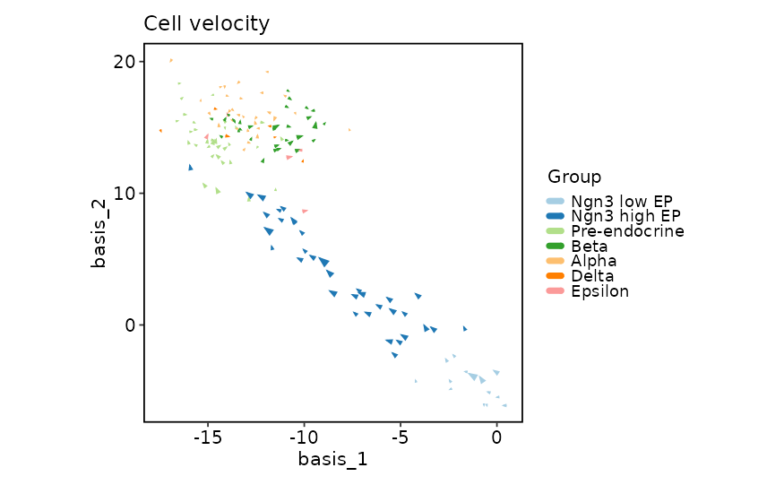
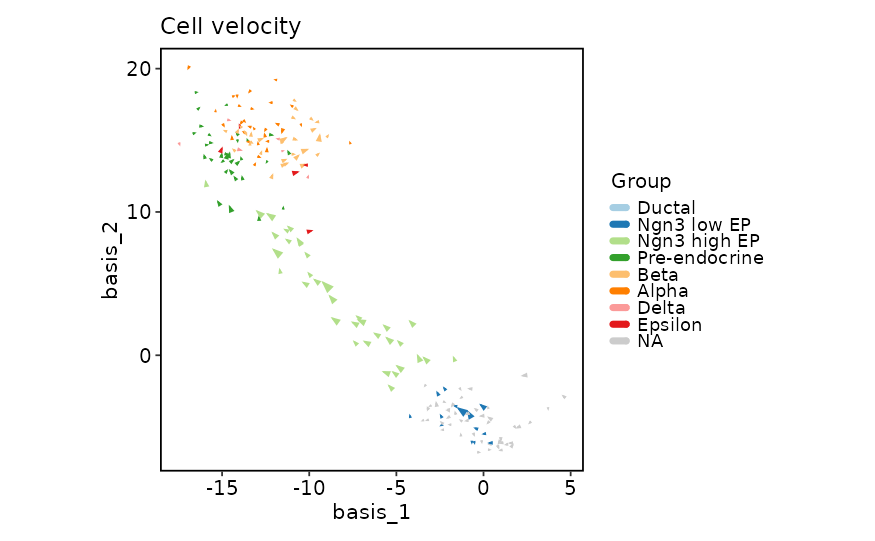
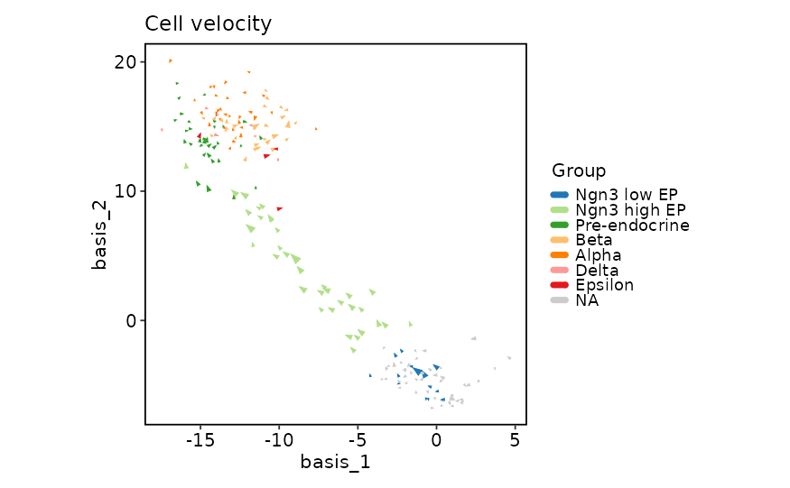
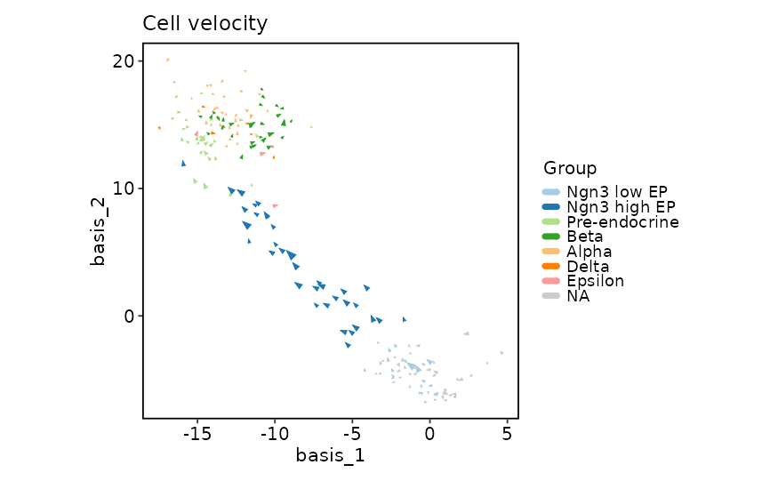

Plots RNA velocity vectors on a low-dimensional embedding (e.g., UMAP, t-SNE) to visualize the direction and magnitude of cellular state transitions. Supports three visualization modes: raw arrows at each cell position, arrows on a regular grid, and streamline paths. Optionally colors arrows by cell metadata groups.
Usage
VelocityPlot(
embedding,
v_embedding,
plot_type = c("raw", "grid", "stream"),
split_by = NULL,
group_by = NULL,
group_name = "Group",
group_palette = "Paired",
group_palcolor = NULL,
n_neighbors = NULL,
density = 1,
smooth = 0.5,
scale = 1,
min_mass = 1,
cutoff_perc = 5,
arrow_angle = 20,
arrow_color = "black",
arrow_alpha = 1,
keep_na = FALSE,
keep_empty = FALSE,
streamline_l = 5,
streamline_minl = 1,
streamline_res = 1,
streamline_n = 15,
streamline_width = c(0, 0.8),
streamline_alpha = 1,
streamline_color = NULL,
streamline_palette = "RdYlBu",
streamline_palcolor = NULL,
palreverse = FALSE,
streamline_bg_color = "white",
streamline_bg_stroke = 0.5,
aspect.ratio = 1,
title = "Cell velocity",
subtitle = NULL,
xlab = NULL,
ylab = NULL,
legend.position = "right",
legend.direction = "vertical",
theme = "theme_this",
theme_args = list(),
return_layer = FALSE,
seed = 8525
)Arguments
- embedding
A matrix or data frame of dimension n_obs x n_dim specifying the low-dimensional embedding coordinates (e.g., UMAP, t-SNE) of the cells. The first two columns are used for the x and y axes.
- v_embedding
A matrix or data frame of dimension n_obs x n_dim specifying the velocity vectors for each cell. Must have the same dimensions as
embedding.- plot_type
A character string specifying the visualization method.
"raw"plots arrows directly from each cell's embedding position."grid"averages velocities onto a regular grid and plots arrows at grid points."stream"computes smooth streamline paths from the gridded velocity field. Default is"raw".- split_by
Not supported for VelocityPlot. Setting this parameter will raise an error.
- group_by
An optional vector of the same length as the number of rows in
embeddingspecifying a grouping variable for cells. When provided, arrows are colored by group usinggroup_palette. Only applies toplot_type = "raw"; ignored with a warning for"grid"and"stream". Default isNULL.- group_name
A character string specifying the legend title for the grouping variable. Default is
"Group".- group_palette
A character string specifying the color palette to use for the grouping variable. Passed to
palette_this. Default is"Paired".- group_palcolor
An optional character vector of specific colors for the grouping variable. If
NULL, colors are generated fromgroup_palette. Default isNULL.- n_neighbors
An integer value specifying the number of nearest neighbors for computing grid velocities. Only used when
plot_typeis"grid"or"stream". Default isceiling(nrow(embedding) / 50).- density
A numeric value specifying the grid density along each dimension. Only used when
plot_typeis"grid"or"stream". Forplot_type = "raw", whendensityis between 0 and 1, it specifies the fraction of cells to randomly subsample. Default is 1.- smooth
A numeric value specifying the standard deviation multiplier for the Gaussian kernel when averaging cell velocities onto grid points. Only used when
plot_typeis"grid"or"stream". Default is 0.5.- scale
A numeric value specifying the scaling factor for the velocity vectors. Applied to raw and grid arrows. For
plot_type = "stream", this is fixed to 1 internally. Default is 1.- min_mass
A numeric value specifying the minimum mass threshold for retaining grid points. Only used when
plot_typeis"grid"or"stream". Default is 1.- cutoff_perc
A numeric value specifying the percentile cutoff for removing low-density grid points. Only used when
plot_typeis"stream". Default is 5.- arrow_angle
A numeric value specifying the angle of the arrowheads in degrees. Applied to
arrowwhenplot_typeis"raw"or"grid". Default is 20.- arrow_color
A character string specifying the color of the velocity arrows. For
plot_type = "stream", this sets only the arrowhead color. Default is"black".- arrow_alpha
A numeric value between 0 and 1 specifying the transparency of the velocity arrows. Only used when
plot_type = "raw"or"grid"; forplot_type = "stream", usestreamline_alphainstead. Default is 1.- keep_na
A logical or character value specifying how to handle NA values in
group_by. Unlike other plot functions, VelocityPlot does not support named lists for per-column control. Seekeep_naincommon_argsfor details of supported values. Default isFALSE.- keep_empty
One of
FALSE,TRUE, or"level"specifying how to handle empty factor levels ingroup_by. Unlike other plot functions, VelocityPlot does not support named lists for per-column control. Seekeep_emptyincommon_argsfor details. Default isFALSE.- streamline_l
A numeric value specifying the integration length of the streamlines. Passed to
geom_streamlineas theLparameter. Default is 5.- streamline_minl
A numeric value specifying the minimum streamline length. Shorter streamlines are not drawn. Passed to
geom_streamlineas themin.Lparameter. Default is 1.- streamline_res
A numeric value specifying the resolution of the streamline integration. Passed to
geom_streamlineas theresparameter. Default is 1.- streamline_n
A numeric value specifying the number of streamlines to draw. Passed to
geom_streamlineas thenparameter. Default is 15.- streamline_width
A numeric vector of length 2 specifying the range of line widths for streamlines. Passed to
scale_size(range = ...). Only used whenstreamline_colorisNULL. Default isc(0, 0.8).- streamline_alpha
A numeric value between 0 and 1 specifying the transparency of the velocity streamlines. Default is 1.
- streamline_color
An optional character string specifying a fixed color for streamlines. When
NULL(the default), streamlines are colored by velocity magnitude usingstreamline_palette.- streamline_palette
A character string specifying the color palette for streamline velocity magnitude. Passed to
palette_this. Only used whenstreamline_colorisNULL. Default is"RdYlBu".- streamline_palcolor
An optional character vector of specific colors for the streamline velocity gradient. If
NULL, colors are generated fromstreamline_palette. Default isNULL.- palreverse
A logical value indicating whether to reverse the palette. Default is FALSE.
- streamline_bg_color
A character string specifying the background (outline) color applied to streamlines to create a stroke effect. Default is
"white".- streamline_bg_stroke
A numeric value specifying the additional line width of the background stroke relative to the foreground streamline. Default is 0.5.
- aspect.ratio
A numeric value specifying the aspect ratio of the plot.
- title
A character string specifying the title of the plot. A function can be used to generate the title based on the default title. This is useful when split_by is used and the title needs to be dynamic.
- subtitle
A character string specifying the subtitle of the plot.
- xlab
A character string specifying the x-axis label.
- ylab
A character string specifying the y-axis label.
- legend.position
A character string specifying the position of the legend. if
waiver(), for single groups, the legend will be "none", otherwise "right".- legend.direction
A character string specifying the direction of the legend.
- theme
A character string or a theme class (i.e. ggplot2::theme_classic) specifying the theme to use. Default is "theme_this".
- theme_args
A list of arguments to pass to the theme function.
- return_layer
A logical value indicating whether to return only the ggplot layers instead of the full assembled plot. When
TRUE, returns a list of ggplot layers suitable for combining with other ggplot objects. Default isFALSE.- seed
The random seed to use. Default is 8525.
Value
A ggplot object representing the cell velocity plot, with height and width attributes set for consistent rendering. If return_layer = TRUE, returns a list of ggplot layers instead.
Rendering Pipeline
The VelocityPlot function proceeds through the following steps:
Input validation — Verifies that
embeddingandv_embeddingare matrices or data frames of equal dimensions, thatgroup_bymatches the number of rows (if provided), and thatsplit_byisNULL(unsupported and raises an error).Axis label resolution — Uses the column names of
embeddingas axis labels, falling back to"Reduction 1"and"Reduction 2"when column names areNULL.Grouping setup — Converts
group_byto a factor and applieskeep_na/keep_emptylogic to filter or recode missing values and empty factor levels.Plot-type dispatch — Branches on
plot_type:raw — Optionally subsamples cells when
density < 1, scales velocity vectors byscale, computes arrow lengths proportional to the embedding range, and rendersgeom_segmentwith arrowheads. Whengroup_byis provided, arrows are colored by group usinggroup_palette.grid — Delegates to
.compute_velocity_on_gridto interpolate the sparse cell velocities onto a regular grid, then rendersgeom_segmentwith arrowheads at each grid point.group_byis ignored with a warning.stream — Delegates to
.compute_velocity_on_gridwithadjust_for_stream = TRUE, then renders smooth streamline paths viageom_streamline. Whenstreamline_coloris provided, streamlines use a fixed color with a background stroke; whenNULL, streamlines are colored by velocity magnitude usingstreamline_palette.group_byis ignored with a warning.
Layer return or plot assembly — If
return_layer = TRUE, returns the list of ggplot layers. Otherwise, constructs a fullggplotobject with labels, theme, aspect ratio, legend configuration, andheight/widthattributes viacalculate_plot_dimensions().
Examples
# \donttest{
data(dim_example)
dim_example$clusters[dim_example$clusters == "Ductal"] <- NA
# Basic velocity plot with group coloring
VelocityPlot(dim_example[, 1:2], dim_example[, 3:4], group_by = dim_example$clusters)

# Handle NA groups with keep_na / keep_empty
VelocityPlot(dim_example[, 1:2], dim_example[, 3:4], group_by = dim_example$clusters,
keep_na = TRUE, keep_empty = TRUE)

VelocityPlot(dim_example[, 1:2], dim_example[, 3:4], group_by = dim_example$clusters,
keep_na = TRUE, keep_empty = 'level')

VelocityPlot(dim_example[, 1:2], dim_example[, 3:4], group_by = dim_example$clusters,
keep_na = TRUE, keep_empty = FALSE)

# }